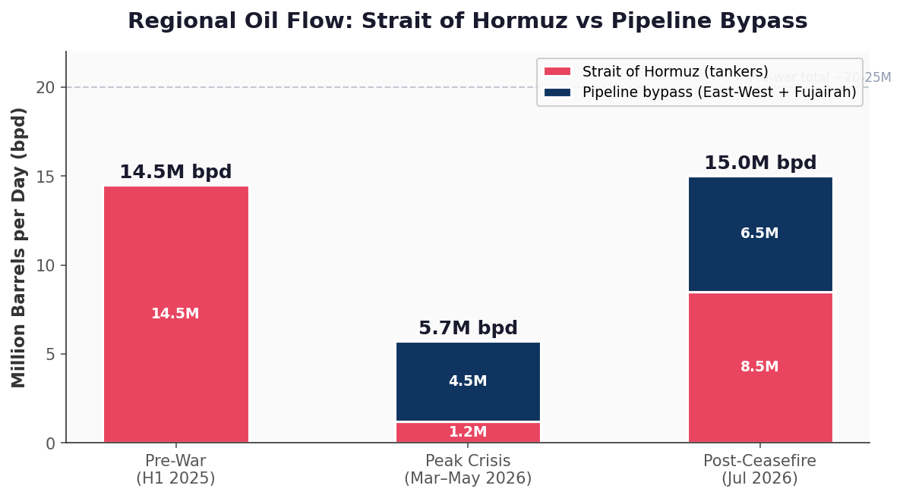
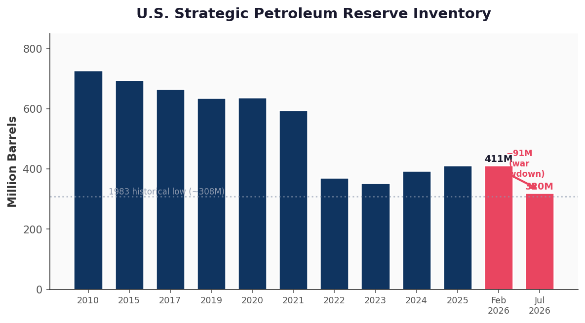
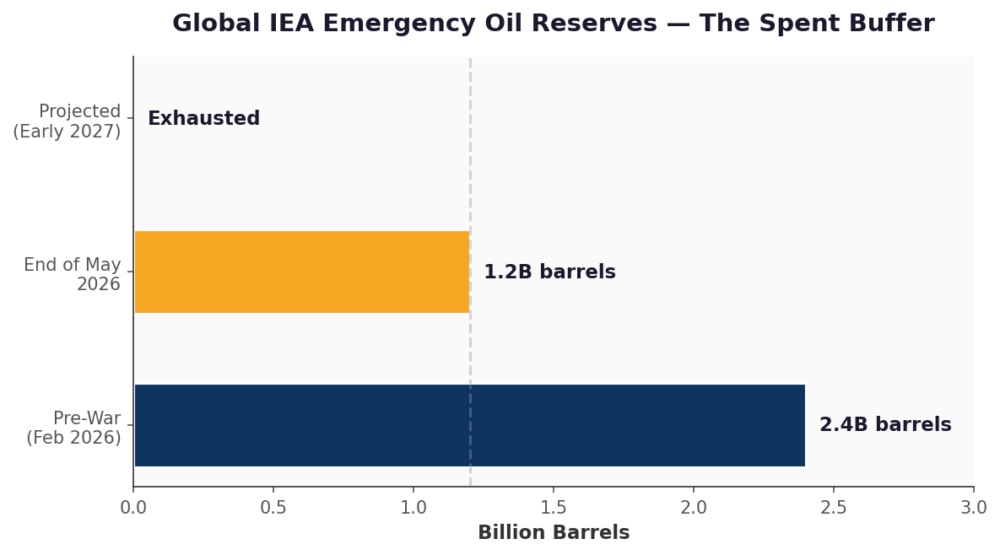
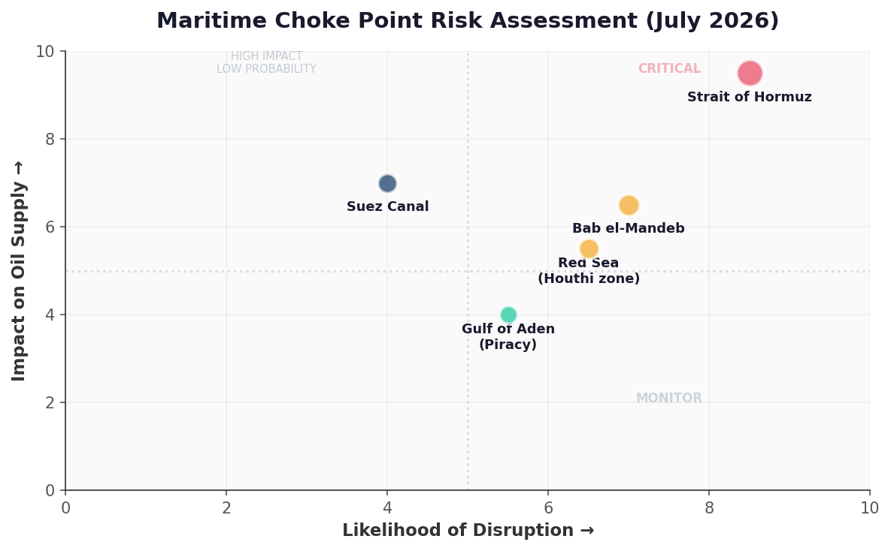

Executive Summary / 01
Situation Report
JUL 15 2026Before the war, 20-21M bpd transited Hormuz — 20% of global consumption. During peak crisis (Mar–May), tanker traffic dropped to 1.2M bpd. Iran boarded vessels, laid sea mines, and the IRGC formally closed the strait on March 27.
Post-ceasefire recovery has restored ~15M bpd regional total (8.5M tanker + 6.5M pipeline). But that 15M figure conflates two things — tanker traffic through Hormuz is still less than half pre-war levels. A backlog of ~17M barrels of pre-war Saudi oil still clearing inflates apparent recovery.
The IMF warned July 15: global buffers halved to ~1.2B barrels. At current disruption rates, exhausted by early 2027.
The reserve cushion that absorbed the initial shock no longer exists. Any renewed Hormuz closure will translate directly into price — with no institutional buffer.
Key Metrics
| Peak Brent | $126 |
| SPR Released | ~93M bbl |
| Below Pre-War | 35% |
| Max Pipeline | 10.3M bpd |
| IEA Release | 400M bbl |
| Global Drawdown | ~1B bbl |
Live Flow Map / 02
Throughput & Reserves / 03
Hormuz Throughput
STILL -40%
Pre-war: 20.5M bpd. Peak crisis: 1.2M bpd. Now: 8.5M bpd tanker + 6.5M pipeline = 15M regional.
Strategic Reserves — The Spent Buffer
43-YR LOW

US SPR: 319.5M bbl — lowest since April 1983. Total global drawdown: ~1 billion barrels.
Pipeline Bypass / 04
Pipeline Infrastructure
4.3M / 10.3M BPD| Pipeline | Status | Utilization | Flow / Cap |
|---|---|---|---|
| Saudi Petroline (East-West) 1,200km twin-pipe · 1980s |
Active | 2.5M / 7M | |
| UAE ADCOP (Habshan-Fujairah) Bypasses Hormuz entirely |
Active | 1.5M / 1.8M | |
| ADNOC West-East 1 Under construction · ETA 2027 |
Building | 0 / 1.5M | |
| Trucking (all routes) Road infrastructure insufficient |
Negligible | ~0 |
Combined bypass: 4.3M bpd. Even at full build-out (10.3M), covers only ~half of pre-war Hormuz volumes. Hormuz remains irreplaceable.
Secondary Front / 05
Red Sea · Bab el-Mandeb
ELEVATED
Houthi weapons caches intact. July 5 attack near Hodeida confirmed resumed targeting. Galaxy Leader hijack precedent (Nov 2023).
Somali piracy surging — 3 merchant vessels hijacked, 44 seafarers held captive.
Two-Front Risk Assessment
Two-front disruption (Hormuz + Bab el-Mandeb) would force Cape of Good Hope rerouting — +10-14 days transit, removing 2-3M bpd effective supply.
| Houthi capability | Intact |
| Somali piracy | 3 vessels hijacked |
| Cape reroute penalty | +10-14 days |
| Effective supply loss | 2-3M bpd |
Price Outlook / 06
Brent Crude Scenarios
NO SAFETY NET$150/bbl if Hormuz remains closed — the price needed to force demand destruction.
"Operating without a safety net" — even small disruptions will produce outsized price moves.
◈ Opposing Views & Alternative Analysis
The $7 Billion Question
07 · CFTC PROBEOn April 7, $950M in oil sell orders executed in a single minute — minutes before Trump announced the ceasefire. On April 17, a $760M short placed 20 minutes before Iran's FM announced Hormuz reopening.
Total across multiple exchanges: ~$7 billion in perfectly timed bets.
Examining trades placed before every major Trump Iran policy shift. No charges filed. Snopes could not confirm the $51M Trump-linked account.
Sources: Reuters, Guardian, Wikipedia
Follow the Money
08 · WINNERS| Beneficiary | Gain |
|---|---|
| US Energy Sector Market cap since Feb 28 |
+$93B |
| Russia (Urals) Oil tax revenue, April |
2× to $9B |
| Iran (Hormuz tolls) $1/bbl × tankers |
$20M/day |
| China (demand cut) Largest single crisis offset |
-3M bpd |
Sources: Dow Jones Markets, Reuters, Chatham House, SocGen
The Chokepoint Doctrine
09 · ALTERNATIVE FRAMEWORKHelen Thompson (Cambridge) and Elbridge Colby's Strategy of Denial framework suggest the Hormuz closure wasn't a bug — it was a feature. The thesis: choking off Gulf oil disproportionately harms China (50% of imports via Hormuz), while the US — a net energy exporter — benefits from elevated prices.
Project 2025 explicitly frames strangling China's energy supply lines as strategic doctrine. Under this read, Trump's erratic Hormuz policy isn't indecision — it's controlled escalation.
The 20% toll proposal (July 13, retracted July 14) fits: float a tariff on global shipping → let the market price it in → "back down" while the threat persists.
Al Jazeera called it "piracy." The IMO formally opposed it. But the signal was sent.
Sources: China Beyond the Wall, MarketWatch, Al Jazeera, CFR, Heritage Foundation
China's Black Box
10 · CLASSIFIEDChina's SPR is classified. EIA estimates ~1.4 billion barrels as of Dec 2025 — potentially larger than every other nation's reserve combined.
They were still building inventory during the crisis while cutting imports 3M bpd — the single largest offset to the Hormuz shock, larger than all coordinated SPR releases combined (SocGen).
| Refining capacity | 19M bpd (world's largest) |
| Utilization | Below optimal |
| Mining/stockpile behavior | Accumulating |
Sources: EIA, SocGen, Vortexa, Baker Institute, The Diplomat
Bitcoin & The Bearer Asset
11 · IRAN DIGITALIran legalized industrial BTC mining in 2019. Production cost: ~$1,300/coin via subsidized electricity. Before the war: 4.2% of global hashrate, 427,000 mining devices.
Iran's "Strait of Hormuz Management Plan" (March 30) charges tankers up to $2M/ship. Settlement reported in yuan, stablecoins — and an Oil Ministry spokesperson added bitcoin.
TRM Labs, Chainalysis, Galaxy: no onchain evidence of BTC at scale. Lightning's largest tx ever: $1M. A single toll: $2M. The tech isn't there — but the logic is.
IRGC-linked crypto flows since 2023: ~$3B. 99% settled in USDT on Tron, not BTC.
Sources: Bitcoin Policy Institute, TRM Labs, Chainalysis, Reuters
Black March & The EV Tipping Point
12 · DEMAND DESTRUCTIONForbes, CFR, and Oxford Energy agree: the Hormuz crisis may have permanently destroyed oil demand. Not through supply — through structural consumption shift.
EV sales doubled. Battery costs fell 36%. Global EV fleet now avoids consumption equivalent to 70% of Iran's total exports.
Experts anticipate a post-ceasefire "maxi-glut" — supply investment plus demand destruction from EVs and remote work.
Sources: Forbes, CFR, Japan Times, Oxford Energy, Energy Transitions Commission
The Troll Toll
13 · JULY 13–14Trump declared the US "Guardian of the Strait" and demanded 20% of all cargo value. The IMO formally opposed it. Al Jazeera: "Piracy."
24 hours later, walked it back entirely. Classic pattern: float a tariff → market prices the risk → withdraw while uncertainty persists.
| Proposed fee | 20% of cargo |
| Duration | ~24 hours |
| IMO response | Opposed |
| Al Jazeera | "Piracy" |
Sources: CNBC, Politico, NYT, PBS, CNN, Al Jazeera
Sources & Methodology
Open-source intelligence synthesis. Pipeline utilization carries ±0.5M bpd uncertainty. Global reserve figures are IEA/IMF estimates — China's SPR (~1B+ bbl) not transparently reported. Figures marked as estimates derived from cited sources.